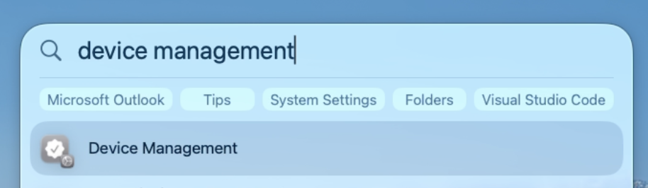
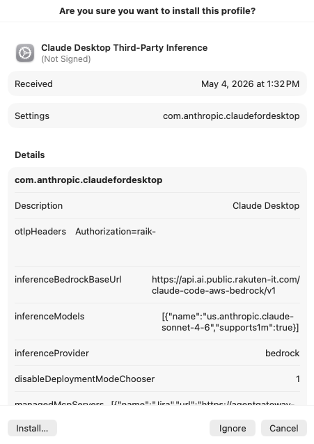
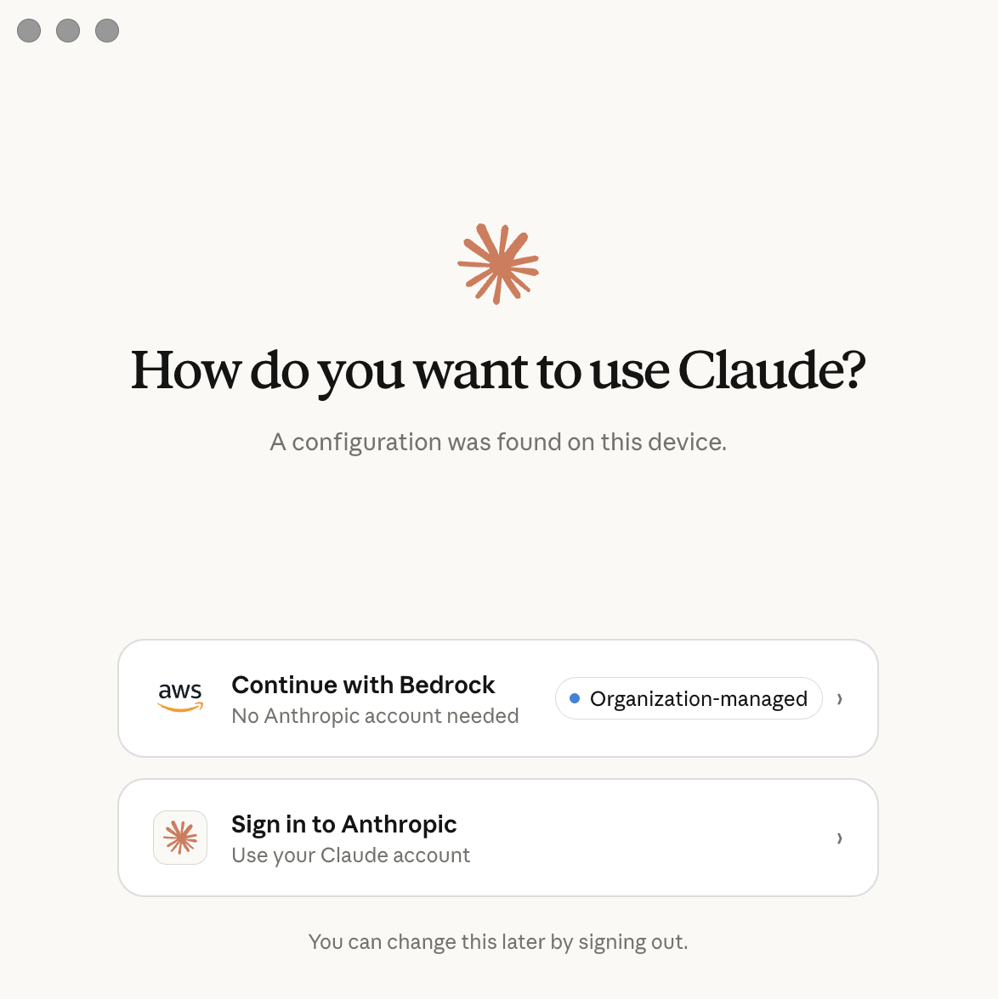
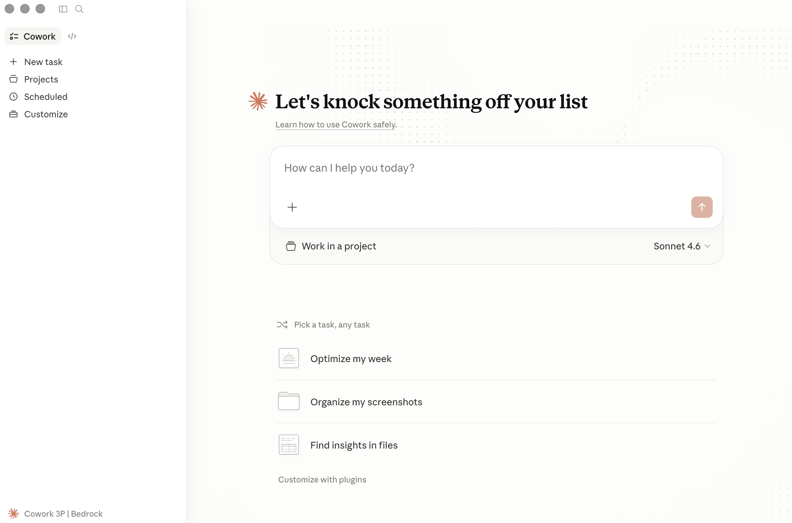

Install Claude Desktop
Third-Party Inference Profile
Follow these three steps to install the configuration profile that enables Claude Desktop to use your organization's inference endpoint.
Open Device Management via Spotlight
Use Spotlight Search to open Device Management in System Settings.
Press ⌘ Command + Space to open Spotlight Search, then follow the path for your macOS version:
Type "device management" and select Device Management from the results — it opens directly in System Settings.
Type "profiles" and select Profiles from the results.

Find the Downloaded Profile
Locate Claude Desktop Third-Party Inference in the Downloaded section.
In the Device Management pane, scroll to the Downloaded section. You should see Claude Desktop Third-Party Inference listed with a yellow warning badge indicating the profile is not yet installed.

Install the Profile
Double-click the profile and click Install… to apply it.
Double-click the profile entry to open the installation dialog. Review the profile details, then click Install… in the bottom-left corner to apply it. You may be prompted for your Mac password.

Sign in with Bedrock
Choose Continue with Bedrock on the login screen.
Open Claude Desktop from your Applications folder. On the login screen, select Continue with Bedrock — this connects Claude to your organization's inference endpoint instead of Anthropic's default servers.

You're all set!
Claude Desktop is ready to use with your organization's endpoint.
Setup is complete. Claude Desktop is now configured to use your organization's inference endpoint. Start a conversation and enjoy!
